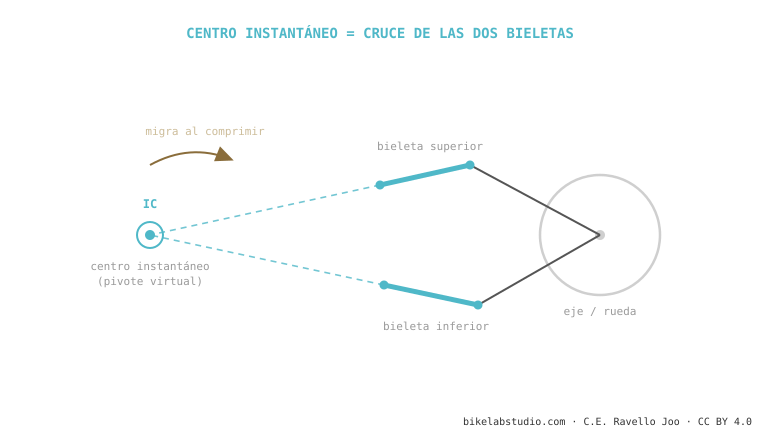

El centro instantáneo de rotación (instant center, IC) es el punto —real o virtual— sobre el que gira tu rueda trasera en cada instante. En un monopivote es el pivote físico; en un sistema de bieletas es un punto imaginario donde se cruzan las prolongaciones de las dos bieletas. De dónde está ese punto salen el anti-squat y el axle path — y se mueve a medida que la suspensión se comprime. Es la pieza que conecta toda la cinemática.
Si entiendes este punto, entiendes por qué VPP, DW-link, Horst y monopivote se comportan distinto: todos son, en el fondo, formas de poner el centro instantáneo donde el ingeniero quiere.
Cuando abres una puerta, gira sobre sus bisagras. Esa bisagra es su centro de rotación. Ahora imagina una puerta cuya bisagra se mueve sola mientras la abres: eso es tu suspensión.
En cada instante, la rueda trasera está girando sobre un punto. En el monopivote ese punto es obvio: el perno del pivote, que puedes tocar con el dedo. La rueda traza un arco perfecto alrededor de él. Fácil.

¿Y si no hay un solo pivote, sino dos bieletas? Aquí está la magia. Prolonga con una regla la línea de cada bieleta hasta que se crucen. Ese cruce es el centro instantáneo: el punto sobre el que gira la rueda en ese instante, aunque ahí no haya ningún perno. Por eso se llama pivote virtual — es matemático, no físico. Puede estar dentro del cuadro, delante del pedalier o incluso fuera de la bici.
Esto es lo que casi ningún blog conecta. La posición del centro instantáneo respecto a dos referencias —el plato/pedalier y el punto de contacto del neumático con el suelo— es de donde se calculan los dos números que ya conoces:
El anti-squat sale de trazar una línea desde el contacto del neumático trasero hacia el centro instantáneo y ver dónde cruza la línea de la cadena. El axle path es simplemente el arco que describe el eje girando alrededor del centro instantáneo en ese instante. Cambia dónde está el IC y cambias las dos cosas a la vez. Por eso un ingeniero no "ajusta el anti-squat" directamente: mueve el centro instantáneo, y el anti-squat y el axle path lo siguen.
La palabra clave es instantáneo. En las bieletas, al comprimirse la suspensión cada bieleta gira un poco, así que el cruce de sus líneas se mueve. El centro instantáneo de hoy no es el de dentro de 30 mm de recorrido. Esa migración es justo lo que permite que una bici tenga mucho anti-squat al inicio (pedalea firme) y poco al final (traga sin patear) — algo imposible con un pivote fijo. La migración es la ventaja real de los sistemas de bieletas sobre el monopivote, no el número de pivotes en sí.
El punto sobre el que gira tu rueda trasera en un instante. En monopivote es el pivote real; en bieletas, un punto virtual donde se cruzan sus líneas.
Porque de su posición salen el anti-squat y el axle path. Es la palanca de diseño que tiene el ingeniero.
Sí, es exactamente lo mismo. Virtual porque no hay perno ahí: es donde se cruzan las líneas de las bieletas.
Dinos el modelo y te explicamos su cinemática: dónde cae el IC, cómo migra y qué significa para tu pedaleo. Escríbenos por WhatsApp
© 2026 BikeLab Studio. Contenido bajo CC BY 4.0: puedes copiarlo, traducirlo y publicarlo, incluso con fines comerciales. La cita es obligatoria. Sin atribución, la licencia se revoca de forma automática (CC BY 4.0, §6.a) y el uso pasa a ser una infracción de derechos de autor: solicitamos la retirada del contenido y su desindexación. · Diseño y propiedad: Carlos Ravello Joo